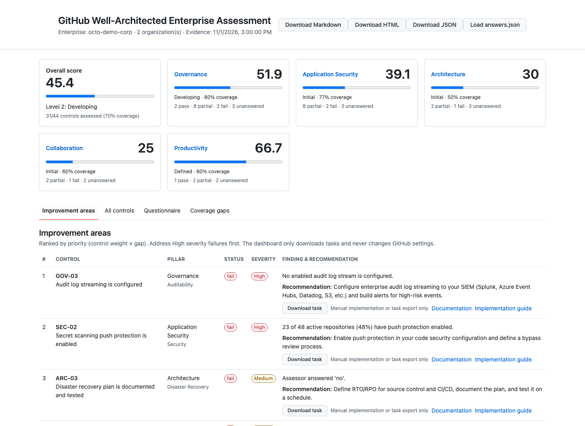
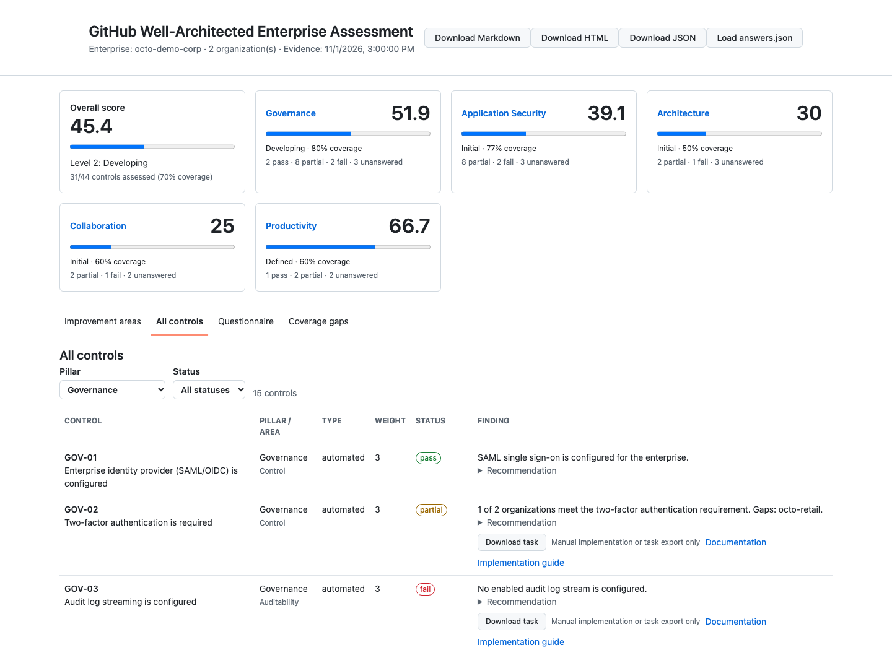
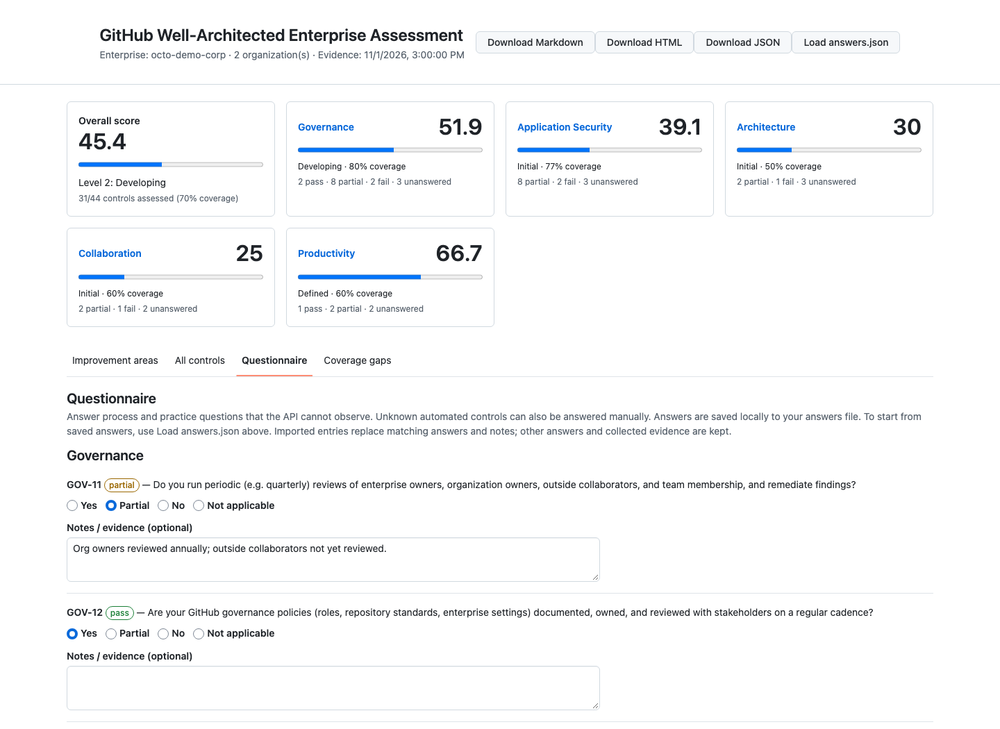
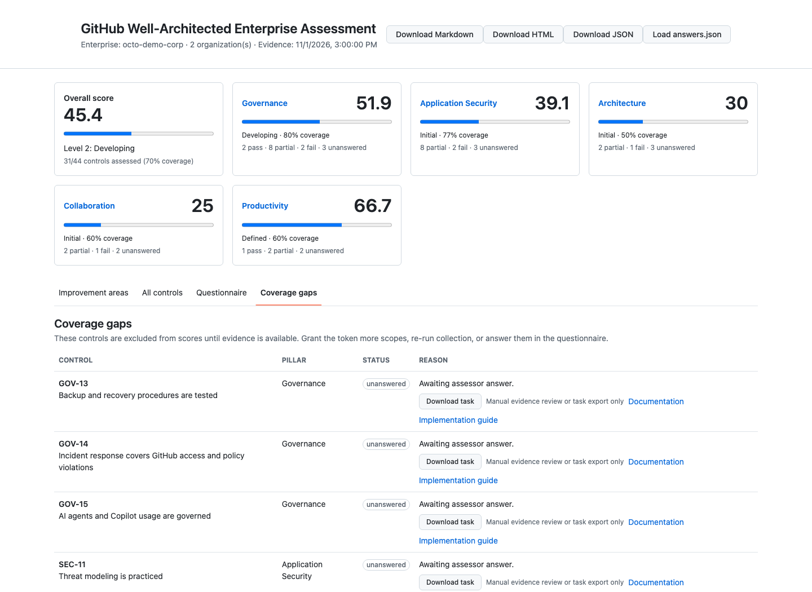

Local-first · Read-only evidence
Turn enterprise evidence into a practical improvement plan.
Collect GitHub configuration evidence, add your team's process knowledge, and review prioritized findings across five Well-Architected pillars.
This site is documentation, not a hosted assessment service. Run the tool on your own machine. It uses an independently defined rubric and maturity model, not an official GitHub certification or a comprehensive security audit.
1. Try it without credentials
Install Node.js 20 or later and npm. Clone the repository, install its dependencies, and start the bundled demo. No GitHub token is needed for the demo.
git clone https://github.com/beardofedu/github-enterprise-assessment.git
cd github-enterprise-assessment
npm ci
npm run demoOpen http://127.0.0.1:4173. Demo answers are saved locally to answers.demo.json; stop the server with Ctrl+C. To start over, stop the demo and move that answers file aside before restarting.
Collect
Read enterprise and organization evidence through GitHub APIs, or explore the fictional demo.
Assess
Review automated checks and answer questions that need human context.
Improve
Export reports and manual tasks, agree on changes, then reassess.
All screenshots below come from the running tool using bundled fictional evidence and demo questionnaire answers. They do not show a real enterprise. Select an image to view it at full size.

2. Collect your enterprise's evidence
Authenticate with the GitHub CLI using an identity authorized to read the intended enterprise and organizations. Replace YOUR_ENTERPRISE_SLUG with the last part of your enterprise URL.
gh auth login
node bin/gh-waf-assess.js run --enterprise YOUR_ENTERPRISE_SLUGThis writes evidence.json and opens a local dashboard server at http://127.0.0.1:4173. Questionnaire changes are saved to answers.json, and existing answers are loaded on startup. The tool looks for GH_TOKEN, then GITHUB_TOKEN, then gh auth token.
Choose access and scope deliberately
Use the least access appropriate for the assessment. Enterprise-owner or organization-owner permissions may be required for administrative settings. Classic token or GitHub CLI OAuth scopes may include read:enterprise, read:org, repo, security_events, and read:audit_log, depending on the checks. Audit-log streaming endpoints require a classic token with read:audit_log. Authorize SAML SSO where required. Fine-grained tokens may cover only some endpoints; GitHub App authentication is not implemented.
# Limit collection to explicitly selected organizations
node bin/gh-waf-assess.js run --enterprise YOUR_ENTERPRISE_SLUG --orgs org-one,org-two
# GitHub Enterprise Server: use credentials for that host
gh auth login --hostname github.example.com
GH_TOKEN="$(gh auth token --hostname github.example.com)" node bin/gh-waf-assess.js run \
--enterprise YOUR_ENTERPRISE_SLUG --api-url https://github.example.com/api/v3The default inventory limit is 1,000 repositories per organization; deep inspection samples 25 active repositories. Adjust --max-repos and --sample as needed. Samples, truncated inventories, and inaccessible settings are not comprehensive coverage. GitHub Enterprise Server API availability depends on the server version.
Keep assessment data private. Evidence, answers, reports, and notes may contain sensitive enterprise information. Do not commit them or upload them to GitHub Pages. The dashboard binds to loopback, and collection makes read-only GitHub API requests.
3. Review findings and controls
Start in Improvement areas. Findings are ranked by control weight multiplied by the gap; review High severity failures first. Confirm the affected scope and linked guidance before deciding on a change.
Switch to All controls to see passes as well as incomplete and failed checks. Filter by pillar and status to focus your review. Expand evidence details where available.

Read scores alongside coverage
The bundled rubric includes 44 controls across Governance, Application Security, Architecture, Collaboration, and Productivity. Pass, partial, and fail contribute 1, 0.5, and 0, weighted by control importance. Unknown, unanswered, and not-applicable controls are excluded from scores. Coverage is the percentage of applicable controls that were scored.
Maturity labels are Initial (below 40), Developing (40 to below 60), Defined (60 to below 75), Managed (75 to below 90), and Optimized (90 to 100). A high score with low coverage is not a complete assessment.
4. Add the human context
Open Questionnaire for controls that cannot be determined from the API. Choose Yes, Partial, No, or N/A and add notes that explain your evidence. Answers save automatically; notes save when you leave the field. Check for the save confirmation and resolve any error before closing the dashboard.

To resume a different answers file, start the dashboard with an explicit path:
node bin/gh-waf-assess.js serve --evidence evidence.json --answers reviews/answers.jsonOr select Load answers.json in the dashboard. Import a JSON object keyed by control ID, not an exported assessment report. Matching answers and notes are updated; other answers and collected evidence are kept. Imports are saved to the configured answers file.
{
"GOV-11": {
"answer": "partial",
"notes": "Demo: owners reviewed annually; collaborator review is pending."
},
"GOV-12": "yes"
}Allowed answer values are yes, partial, no, and na. Imports must be no larger than 64 KiB, with notes of at most 4,000 characters per control. Invalid imports leave existing answers unchanged.
5. Resolve coverage gaps
Coverage gaps lists unknown or unanswered controls. These are missing evidence, not confirmed configuration failures. Review access errors, unsupported endpoints, and questionnaire items before interpreting the overall score.

6. Export reports and plan improvements
Download Markdown, JSON, or standalone HTML reports from the dashboard. HTML reports include their styling for offline viewing. Use Download task on a finding or gap to export a Markdown recommendation, reference links, and a review checklist.
Collection, dashboard actions, and task downloads never change GitHub settings. Agree on the intended policy with the relevant owners, apply approved changes through your normal change-control process, verify in GitHub, and collect fresh evidence.
Collect and report separately
node bin/gh-waf-assess.js collect --enterprise YOUR_ENTERPRISE_SLUG --out evidence.json
node bin/gh-waf-assess.js serve --evidence evidence.json --answers answers.json
# After completing the questionnaire (stop the server with Ctrl+C first)
node bin/gh-waf-assess.js assess --evidence evidence.json --answers answers.json \
--format html --out reports/assessment.html
node bin/gh-waf-assess.js assess --evidence evidence.json --answers answers.json \
--format md --out reports/assessment.md
node bin/gh-waf-assess.js assess --evidence evidence.json --answers answers.json \
--format json --out reports/assessment.jsonFor automation, --fail-under N exits with code 2 when the overall score is below the threshold. Review coverage separately; the score alone does not establish completeness. Run node bin/gh-waf-assess.js --help for all options or node bin/gh-waf-assess.js rubric to list controls. A custom rubric can be supplied with --rubric path/to/rubric.json; new automated controls also require check implementations.
Read the implementation guide and daily official GitHub updates digest before applying changes. The digest tracks upstream GitHub guidance; the tool changelog tracks this project.
Troubleshooting
- The dashboard says Primer CSS is missing
- Run
npm cifrom the application directory, then restart the dashboard. - The enterprise cannot be discovered
- Confirm the enterprise slug, active identity, token scopes, and SSO authorization. Collection stops rather than silently changing scope.
--orgs org-one,org-twochooses scope explicitly;--use-token-orgsopts into token-visible organizations, which may not match the enterprise. - The local port is already in use
- Start with another port, for example
node bin/gh-waf-assess.js serve --demo --port 4174, then open the URL printed in your terminal. - Answers did not load or save
- Check the configured answers path, directory permissions, JSON shape, control IDs, and import limits. Use the dashboard's visible error message to correct the file; do not assume an unsuccessful import changed your answers.
Report reproducible problems using the issue templates, using fictional or sanitized data only. See the security policy for private vulnerability reporting.